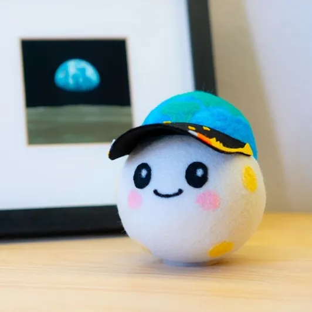
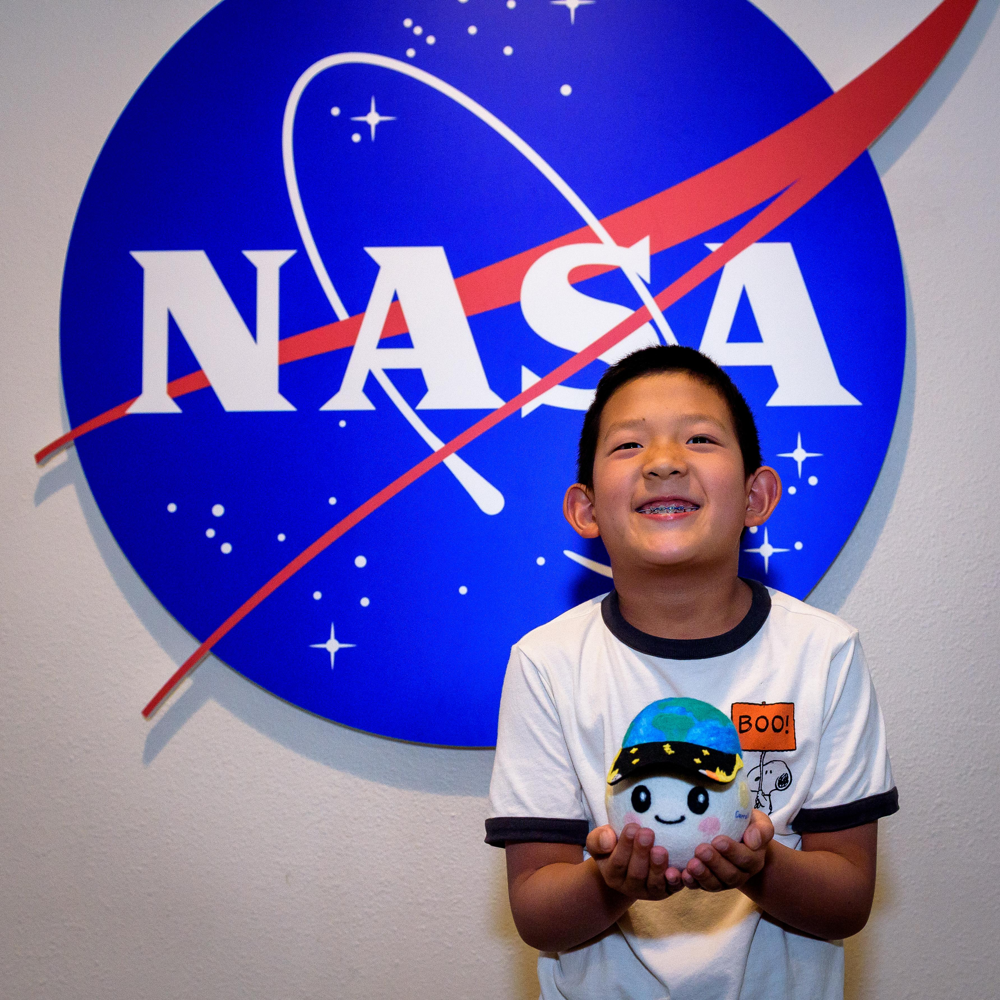
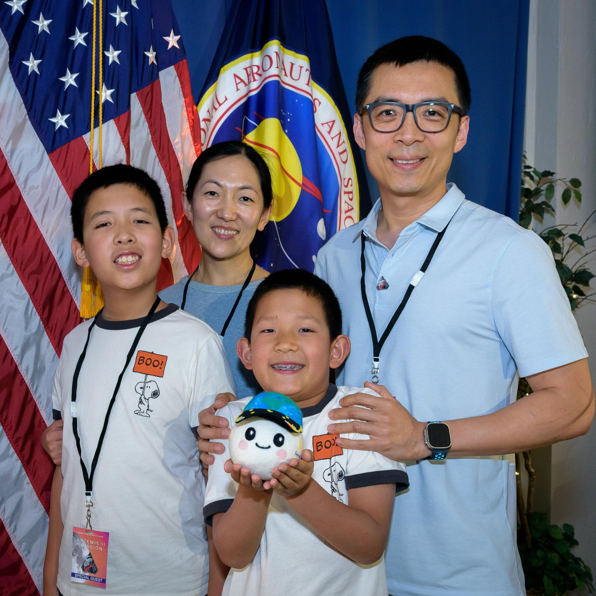

Maskotka ARTEMIS
Oficjalną maskotką misji Artemis II jest pluszak o imieniu Rise. Został on wybrany w drodze konkursu NASA „Moon Mascot”, a jego projekt stworzył 8-letni Lucas Ye z Kalifornii.
Służy jako wskaźnik mikrograwitacji gdy maskotka zaczyna swobodnie unosić się w kapsule Orion jest to sygnał dla załogi, że statek osiągnął przestrzeń kosmiczną.


